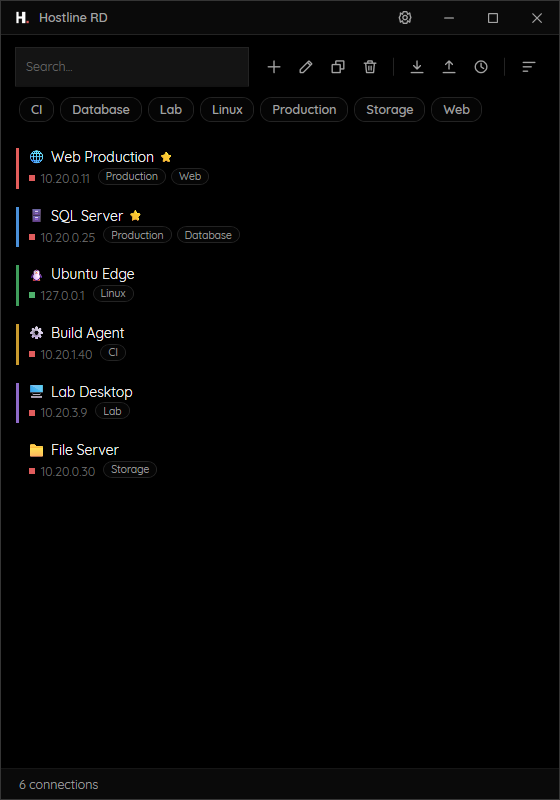
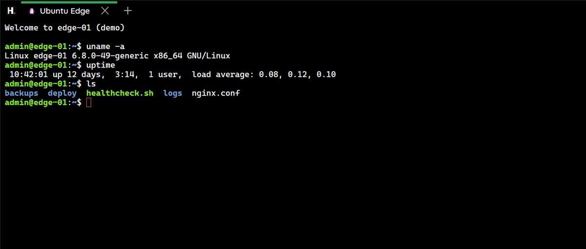
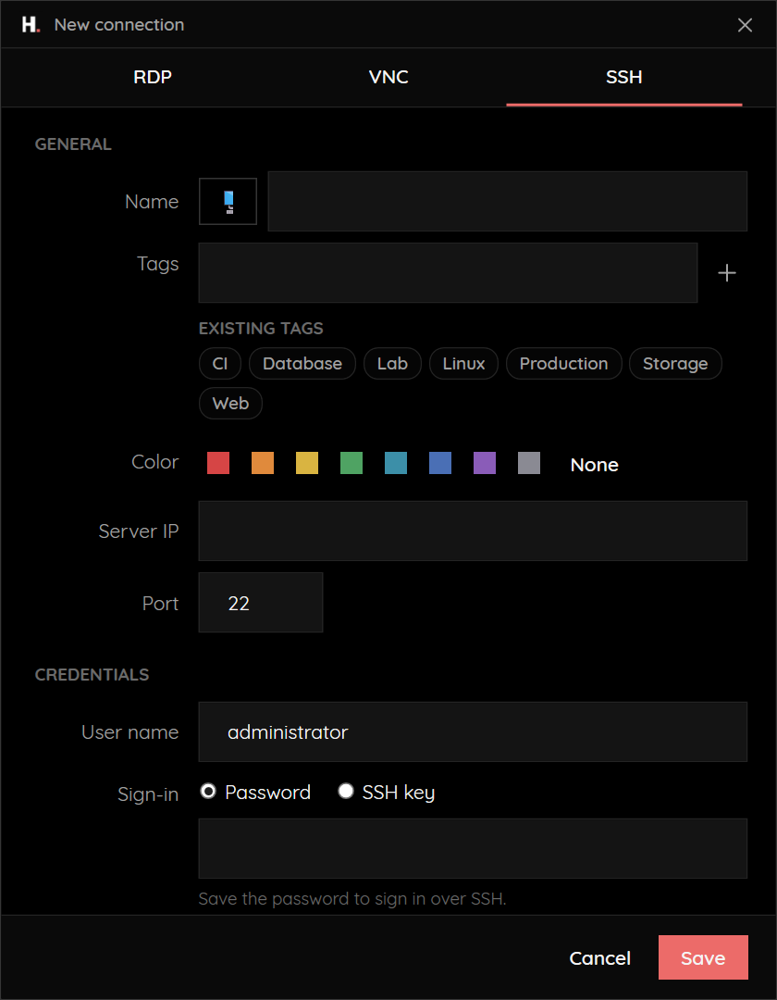

- RDP
- VNC
- SSH
RDP, VNC and SSH in one tabbed window.
Hostline RD is a free remote connection manager for Windows 10 and 11. Open your servers as tabs, keep them organized with tags and favorites, and find any of them in a keystroke.
Windows 10/11 (x64) · No account · No telemetry

Features
Everything you need to work with many remote machines, without leaving one window.
Sessions
RDP
- Tabbed sessions using Microsoft's own Remote Desktop ActiveX control
- Drag a tab out into its own window
- Full screen, and multi-monitor full screen via mstsc
- Automatic reconnect on network drops
- RD Gateway support
VNC
- VNC sessions in a tab
- VNC password authentication
- Tight and ZRLE encodings via an MIT-licensed library
- Two-way clipboard
SSH
- xterm-compatible terminal in a tab: colors, full-screen terminal apps, copy and paste
- Sign in with a saved password or a private key file
- Host keys verified on first use, with a warning if a key changes

Organize
- Tags, favorites, colour strips and search
- Reachability indicator (green/red) for every server
- Connection history
- Quick connect launcher with a global hotkey
- Command palette with Ctrl+K
- Import
.rdpand.jsonfiles
Security & privacy
- Saved passwords are encrypted with Windows DPAPI and only used to sign in to your servers
- Export with optional encryption (AES-256-GCM, protected by your passphrase)
- No account, no telemetry
Look & updates
- Light and dark themes, colour palettes
- English and Turkish interface
- Automatic updates from GitHub Releases

Download
Hostline RD is free. Get the latest release from GitHub; the app updates itself from GitHub Releases after that.
Requirements
- Windows 10 or 11 (x64)
- Nothing else to install: the .NET runtime is included
- Microsoft Edge WebView2 Runtime, needed only for SSH tabs (already built into Windows 11)
Source available on GitHub
The full source code is on GitHub, and contributions are welcome: report bugs, suggest features or send a pull request.
Free for noncommercial use under the PolyForm Strict License 1.0.0. There is one official release; see the LICENSE file in the GitHub repository.